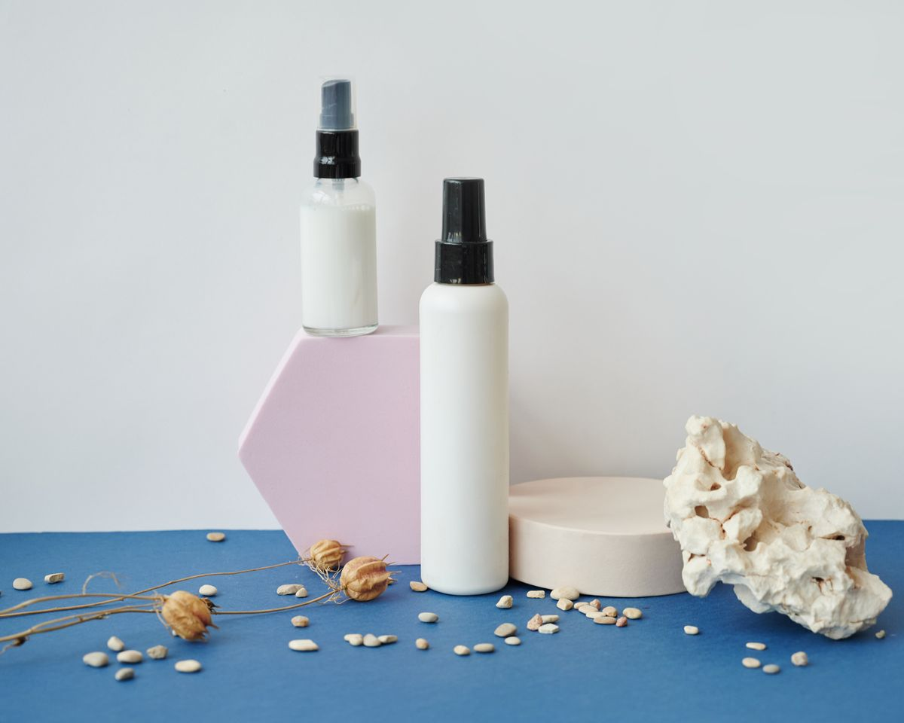

V.02 / STATESInteraction evidence
Idle · hover · focus · selected · disabled · recovery
Every state keeps the scent decision legible.
Violet avoids invisible interaction magic. Selection, errors, capacity and saved state are expressed through structure, text and contrast — never color alone.
Primary rule
State change must remain obvious without motion.Accessibility rule
Focus is visible and selection is not color-only.
State change must remain obvious without motion.Accessibility rule
Focus is visible and selection is not color-only.



01 / Buttons01
Action hierarchy survives every interaction state.
Primary actions use filled aubergine, secondary actions use line treatment, and disabled actions lose emphasis without disappearing.
02 / Inputs02
Utility states stay conventional and calm.
Fields prioritize comprehension over novelty. Error and success states add direct language alongside border changes.
03 / Refinement03
Filters expose both current state and recovery.
Selection persists visibly, can be removed individually, and always provides a clear path back to an unfiltered library.
Available filters
FloralWoodyAmberFresh
Active scent language
Powdery ×Intimate ×Iris
No matching objects
Remove one filter or begin with Scent Portrait.
04 / Product object04
Saved state never turns the product card into app chrome.
The object-study frame remains the visual owner. Saved state is annotation, not a decorative badge stack.
Skin Musk · 150 €
05 / Discovery tray05
Capacity is a system state, not a hidden rule.
The trio communicates empty, partial and full capacity. At 3/3, remaining unselected sample controls disable until the user removes or replaces one.
Begin a trio
01
02
03
One place remains
Iris
Neroli
03
Trio complete
Iris
Neroli
Santal